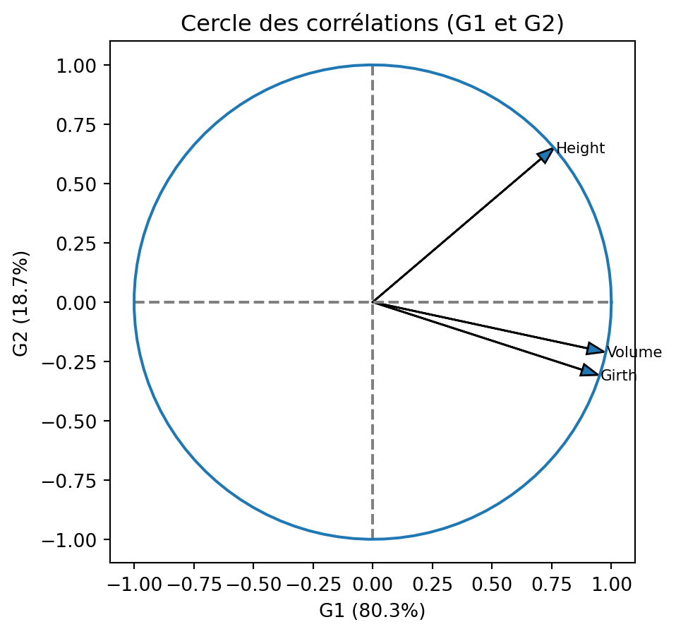
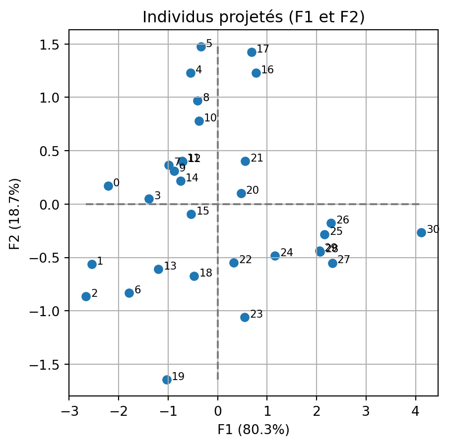

import numpy as np
import pandas as pd
import matplotlib.pyplot as plt
import seaborn as sns
from sklearn.decomposition import PCA
from sklearn.preprocessing import StandardScalerAnalyse en Composantes Principales
Nous allons explorer le jeu de données trees.csv qui donne des mesures de diamètre (girth, en pouces), hauteur (height, en pieds) et volume (volume, en pieds cubes) de cerisiers noirs.
trees=pd.read_csv('trees.csv') 1 - Centrer et réduire les données
scaler = StandardScaler()
scaler.fit(trees)
Z = scaler.transform(trees)
Zarray([[-1.60291968, -0.9572127 , -1.22883711],
[-1.50574137, -1.75488995, -1.22883711],
[-1.44095583, -2.07396086, -1.23502119],
[-0.89027873, -0.6381418 , -0.85160806],
[-0.82549319, 0.79767725, -0.70319007],
[-0.79310042, 1.11674815, -0.64753332],
[-0.72831488, -1.5953545 , -0.90108072],
[-0.72831488, -0.15953545, -0.74029457],
[-0.69592211, 0.6381418 , -0.46819492],
[-0.66352933, -0.15953545, -0.63516516],
[-0.63113656, 0.47860635, -0.36924959],
[-0.59874379, 0. , -0.56714024],
[-0.59874379, 0. , -0.54240391],
[-0.50156548, -1.11674815, -0.548588 ],
[-0.40438717, -0.15953545, -0.68463782],
[-0.11285223, -0.3190709 , -0.49293125],
[-0.11285223, 1.43581905, 0.22442236],
[ 0.01671885, 1.5953545 , -0.17135894],
[ 0.14628993, -0.79767725, -0.27648835],
[ 0.1786827 , -1.9144254 , -0.32596101],
[ 0.24346824, 0.3190709 , 0.26771094],
[ 0.30825379, 0.6381418 , 0.09455662],
[ 0.4054321 , -0.3190709 , 0.37902443],
[ 0.89132366, -0.6381418 , 0.50270609],
[ 0.98850197, 0.15953545, 0.76862165],
[ 1.31242968, 0.79767725, 1.56018426],
[ 1.37721522, 0.9572127 , 1.57873651],
[ 1.5067863 , 0.6381418 , 1.73952266],
[ 1.53917907, 0.6381418 , 1.31900503],
[ 1.53917907, 0.6381418 , 1.28808462],
[ 2.38139111, 1.75488995, 2.89594616]])2 - Lancer l’ACP
pca = PCA()
pca.fit(Z)PCA()In a Jupyter environment, please rerun this cell to show the HTML representation or trust the notebook.
On GitHub, the HTML representation is unable to render, please try loading this page with nbviewer.org.
PCA()
3 - Examiner les ratios cumulés de variance. Combien de variabilité est expliquée par les deux premiers axes ?
np.cumsum(pca.explained_variance_ratio_)array([0.80343332, 0.9906391 , 1. ])3 - Examiner les ratios cumulés de variance. Combien de variabilité est expliquée par les deux premiers axes ?
np.cumsum(pca.explained_variance_ratio_)array([0.80343332, 0.9906391 , 1. ])99% de la variabilité est expliquée par les deux premiers axes, c’est très élevé.
4 - Afficher les valeurs propres
l = 3*pca.explained_variance_ratio_
larray([2.41029997, 0.56161733, 0.0280827 ])5 - Extraire les facteurs
Gn=pca.components_
G=np.empty(shape=Gn.shape)
for i in range(0, Gn.shape[0]):
G[i,:]=Gn[i,:]*np.sqrt(l[i])
Garray([[ 0.94481425, 0.75937614, 0.97003808],
[-0.30718466, 0.6504939 , -0.21003001],
[-0.11385787, -0.01433731, 0.12212093]])6 - Tracer le cercle des corrélation dans le premier plan factoriel pour les variables
fig,ax=plt.subplots(figsize=(5,5))
for i in range(0, Gn.shape[1]):
ax.arrow(0,0, # la flèche part de l'origine
G[0, i], G[1, i], # et arrive en (G_1i,G_2i)
head_width=0.05,head_length=0.07,length_includes_head=True)
ax.text(G[0, i] + 0.01,G[1, i]-0.02, trees.columns[i],fontsize=8)
# affichage des lignes horizontales et verticales
ax.plot([-1, 1], [0, 0], color='grey', ls='--')
ax.plot([0, 0], [-1, 1], color='grey', ls='--')
# nom des axes, avec le pourcentage d'inertie expliqué
ax.set_xlabel('G{} ({}%)'.format(1, round(100*pca.explained_variance_ratio_[0],1)))
ax.set_ylabel('G{} ({}%)'.format(2, round(100*pca.explained_variance_ratio_[1],1)))
ax.set_title("Cercle des corrélations (G{} et G{})".format(1, 2))
an = np.linspace(0, 2 * np.pi, 100)
ax.plot(np.cos(an), np.sin(an)) 
Examiner le cercle des corrélation dans le premier plan factoriel pour les variables.
7 - Quelles variables sont bien représentées dans ce plan ?
Toutes : les pointes des flèches sont très proches du cercle unité. On le confirme en calulant les cos carrés.
Gsq = G**2
print(Gsq[0,:]+Gsq[1,:])[0.98703638 0.99979444 0.98508648]8 - Que pensez vous des positions relatives des variables Girth et Volume dans ce plan ?
Elles sont proches, donc très corrélées positivement.
9 - Quelles sont les variables qui contribuent le plus au premier axe factoriel ?
Contrib=(Gn**2)/np.sum(Gn**2,axis=0)
print(Contrib[0,:])[0.37035804 0.23924496 0.390397 ]Ce sont les variables de diamlètre et de volume
10 - Quelles sont les variables qui contribuent le plus au deuxième axe factoriel ?
print(Contrib[1,:])[0.16801906 0.75343528 0.07854566]C’est la variable de hauteur.
11 - Extraire les composantes principales
F=pca.fit_transform(Z)
Farray([[-2.21148696e+00, 1.70565853e-01, 2.75465135e-01],
[-2.54251238e+00, -5.61656700e-01, 2.77685161e-01],
[-2.66301584e+00, -8.63434840e-01, 2.56459749e-01],
[-1.38602925e+00, 4.96868207e-02, 3.88790636e-02],
[-5.51571033e-01, 1.22783579e+00, -1.98227287e-02],
[-3.41016327e-01, 1.47591521e+00, -2.85704675e-02],
[-1.78657255e+00, -8.33704008e-01, -2.53214499e-02],
[-9.83813046e-01, 3.67534336e-01, -3.09929701e-02],
[-4.03921851e-01, 9.70386893e-01, 7.70417637e-02],
[-8.78699776e-01, 3.11515093e-01, 1.60156561e-03],
[-3.80705559e-01, 7.77622994e-01, 1.18778876e-01],
[-7.18736993e-01, 4.04372564e-01, -6.49245722e-03],
[-7.03281298e-01, 3.97439960e-01, 1.15338181e-02],
[-1.19423675e+00, -6.10005058e-01, 3.65455664e-02],
[-7.51904891e-01, 2.19157596e-01, -2.10519523e-01],
[-5.32736754e-01, -9.25484351e-02, -2.55243849e-01],
[ 7.73841983e-01, 1.22966194e+00, 1.17377535e-01],
[ 6.83437061e-01, 1.42595005e+00, -2.72726285e-01],
[-4.73892315e-01, -6.74864848e-01, -2.32635041e-01],
[-1.03132180e+00, -1.64362213e+00, -1.95152140e-01],
[ 4.71504197e-01, 1.02129006e-01, 2.37329638e-03],
[ 5.58807012e-01, 4.01057173e-01, -1.95126057e-01],
[ 3.27489028e-01, -5.49368133e-01, 2.80452814e-02],
[ 5.44400656e-01, -1.06015434e+00, -1.84653559e-01],
[ 1.15985450e+00, -4.82124308e-01, -1.25142529e-01],
[ 2.16370178e+00, -2.82834783e-01, 1.77016028e-01],
[ 2.29275317e+00, -1.76112105e-01, 1.32869454e-01],
[ 2.31600222e+00, -5.51240998e-01, 1.89304266e-01],
[ 2.07296869e+00, -4.46664569e-01, -1.39150982e-01],
[ 2.05364908e+00, -4.37998815e-01, -1.61683826e-01],
[ 4.11704599e+00, -2.64497206e-01, 3.42257304e-01]])12 - Tracer le nuage de point des individus projetés dans le premier plan factoriel.
fig,ax=plt.subplots(figsize=(5,5))
# individus
ax.scatter(F[:,0],F[:,1])
for i in range(trees.shape[0]):
ax.text(F[i,0]+0.1,F[i,1],'{}'.format(i),fontsize=8)
ax.set_xlabel('F{} ({}%)'.format(1, round(100*pca.explained_variance_ratio_[0],1)))
ax.set_ylabel('F{} ({}%)'.format(2, round(100*pca.explained_variance_ratio_[1],1)))
ax.set_title("Individus projetés (F{} et F{})".format(1, 2))
ax.grid()
ax.plot([min(F[:,0]), max(F[:,0])],[0,0], linestyle="--", color='C7')
ax.plot([0, 0],[min(F[:,1]), max(F[:,1])], linestyle="--", color='C7')
13 - Quels sont les individus qui sont bien représentés dans ce plan ?
cos2ind = pd.DataFrame(
columns=[['axe 1','axe 2','somme']],
index=[np.arange(trees.shape[0])])
for i in np.arange(trees.shape[0]):
for k in np.arange(2):
cos2ind.iloc[i,k]= F[i,k]**2/(sum(Z[i,:]**2))
cos2ind.iloc[i,2]=cos2ind.iloc[i,0]+cos2ind.iloc[i,1]
cos2ind| axe 1 | axe 2 | somme | |
|---|---|---|---|
| 0 | 0.978987 | 0.005824 | 0.984811 |
| 1 | 0.942749 | 0.046006 | 0.988755 |
| 2 | 0.897343 | 0.094334 | 0.991678 |
| 3 | 0.997932 | 0.001282 | 0.999215 |
| 4 | 0.167879 | 0.831904 | 0.999783 |
| 5 | 0.050662 | 0.948982 | 0.999644 |
| 6 | 0.821043 | 0.178792 | 0.999835 |
| 7 | 0.876766 | 0.122364 | 0.99913 |
| 8 | 0.146887 | 0.84777 | 0.994656 |
| 9 | 0.888347 | 0.11165 | 0.999997 |
| 10 | 0.189772 | 0.791756 | 0.981527 |
| 11 | 0.759522 | 0.240416 | 0.999938 |
| 12 | 0.757787 | 0.242009 | 0.999796 |
| 13 | 0.792491 | 0.206767 | 0.999258 |
| 14 | 0.859591 | 0.073026 | 0.932617 |
| 15 | 0.793819 | 0.023957 | 0.817776 |
| 16 | 0.281846 | 0.71167 | 0.993515 |
| 17 | 0.181407 | 0.789706 | 0.971112 |
| 18 | 0.305903 | 0.620379 | 0.926282 |
| 19 | 0.279666 | 0.710321 | 0.989986 |
| 20 | 0.955163 | 0.044813 | 0.999976 |
| 21 | 0.610864 | 0.314654 | 0.925518 |
| 22 | 0.261685 | 0.736396 | 0.998081 |
| 23 | 0.203777 | 0.772779 | 0.976556 |
| 24 | 0.844289 | 0.145882 | 0.990171 |
| 25 | 0.976772 | 0.01669 | 0.993462 |
| 26 | 0.990826 | 0.005846 | 0.996672 |
| 27 | 0.94044 | 0.053277 | 0.993717 |
| 28 | 0.951535 | 0.044178 | 0.995712 |
| 29 | 0.950854 | 0.043252 | 0.994106 |
| 30 | 0.989082 | 0.004082 | 0.993165 |
Tous les individus sont très bien représentés sur ce plan. Seul l’arbre 15 est un peu moins bien reeprésenté que les autres.
14 - Que peut-on dire des arbres qui sont le plus à droite sur premier plan factoriel ?
Ce sont ceux de plus grand diamètre/volume
15 - Que peut-on dire des arbres qui sont le plus à gauche sur premier plan factoriel ?
Ce sont ceux de plus petit diamètre/volume
16 - Que peut-on dire des arbres qui sont le plus en haut (resp. le plus en bas) sur premier plan factoriel ?
Ce sont ceux de plus petite (resp. grande) hauteur.